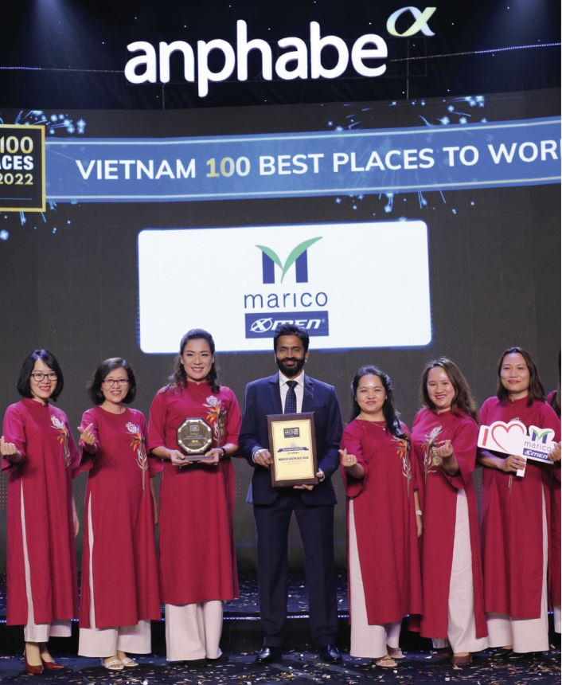
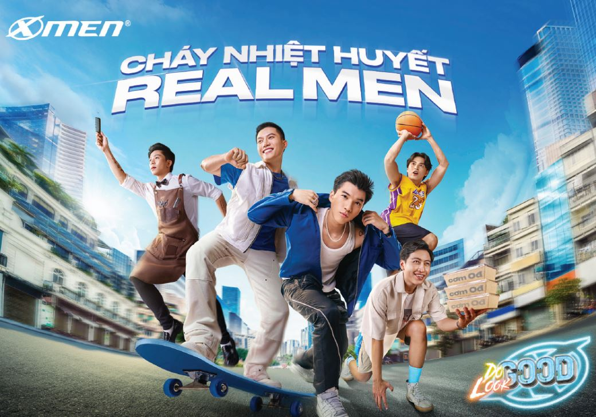

Marico là một trong những công ty hàng đầu của Ấn Độ trong lĩnh vực sản phẩm tiêu dùng toàn cầu về làm đẹp và chăm sóc sức khỏe, hoạt động tại hơn 25 quốc gia. Việt Nam là thị trường chính của Marico tại Đông Nam Á và hoạt động như trụ sở chính cho khu vực này. Tại Việt Nam, Marico là đơn vị dẫn đầu trong lĩnh vực chăm sóc nam giới với thương hiệu nổi tiếng X-Men và cung cấp danh mục sản phẩm gia vị truyền thống Việt Nam dưới thương hiệu Thuận Phát.
Năm 2020, Marico SEA đã trải qua một cuộc cải tổ lớn để xoay chuyển tình hình kinh doanh đang thiếu hiệu quả. Đảm nhận sứ mệnh mới tại Đông Nam Á, ông Vaibhav đã đối mặt với nhiều thách thức như hiệu suất kinh doanh không đồng đều và suy giảm, thị phần đứng yên và tinh thần làm việc của nhân viên thì thấp. Ông phải điều hướng qua cuộc khủng hoảng lớn này, giảm thiểu thiệt hại cho doanh nghiệp và đồng thời nắm bắt cơ hội để thực hiện chiến lược của mình thành công. Để có thể đạt được điều đó, ưu tiên hàng đầu của ông là truyền cảm hứng và tiếp năng lượng cho nhân viên của Marico SEA.

Vào tháng 7 năm 2021, ông Vaibhav đã đề ra tầm nhìn táo bạo cho đội ngũ mới của mình với mục tiêu trở thành công ty phát triển nhanh nhất ở Đông Nam Á, dựa trên 03 trụ cột tăng trưởng: Tăng cường giá trị cốt lõi; Mở rộng danh mục đầu tư; Xúc tiến thương mại.
Tuy nhiên, chiến lược mới này đã gặp phải sự hoài nghi mạnh mẽ do hiệu suất không nhất quán và sự thất bại trong đổi mới trong nhiều năm qua. Để nâng cao tinh thần và khiến các đội ngũ cảm thấy được đầu tư vào sự thành công của chiến lược, ông Vaibhav đã dẫn dắt đội ngũ mới của mình bằng cách đưa ra nhiều biện pháp để thống nhất tổ chức và xây dựng một văn hóa mạnh mẽ trong Marico SEA. Các hoạt động này bao gồm các bài tập gắn kết được thiết kế để hoạt động thông qua các kênh như Các buổi gặp mặt lãnh đạo hằng quý và lượt bỏ các buổi họp 1-1, truyền thông theo chức năng, địa phương hóa lãnh đạo và đa dạng hóa để tạo ra phản ứng tích cực từ các thành viên đối với cơ hội phát triển nghề nghiệp và giúp tận dụng hiểu biết kinh doanh địa phương để thúc đẩy thành công.
Một khung tiêu chí được gọi là GOWIN cũng được tạo ra để phù hợp với nhu cầu kinh doanh. Khung văn hóa này được tích hợp trong từng hoạt động hàng ngày thông qua các nhà lãnh đạo - những người cũng đóng vai trò là những người quảng bá văn hóa trong các diễn đàn. cũng là những người thúc đẩy văn hóa trên các diễn đàn của tổ chức.

Sau 2 năm, những nỗ lực để thực hiện tầm nhìn táo bạo đã bắt đầu mang lại kết quả khả quan.
Gia tăng giá trị cốt lõi: Dự án 'Fund the Growth' đã được khởi động nhằm tái phân bổ các nguồn lực bị gián đoạn, đồng thời triển khai chiến lược tiếp cận thị trường mới với các nguồn lực tối ưu.
Thương hiệu chủ lực X-Men lần đầu tiên đạt được vị trí dẫn đầu thị trường trong danh mục sản phẩm khử mùi nam giới, vượt qua Nivea nhờ vào việc tái ra mắt với mục tiêu nhắm vào đối tượng trẻ tuổi thông qua việc tái định vị, làm mới bao bì và chức năng.

Mở rộng danh mục sản phẩm – Bước chân vào lĩnh vực chăm sóc sắc đẹp nữ: Marico chính thức mở ra danh mục sản phẩm chăm sóc nữ giới với thương hiệu 'Lashe Superfood' - một dòng dầu gội và sữa tắm mới dành cho phụ nữ với thành phần tự nhiên, đã nhận được nhiều phản hồi tích cực từ khách hàng. Purité de Prôvence và Ôliv cũng được mua lại như một phần của chiến lược này.

Xúc tiến thương mại – trụ cột tăng trưởng với nhiều thành tựu đáng kinh ngạc ở đa kênh – Trên kênh Thương mại Tổng hợp, Marico SEA đạt được mục tiêu phân phối với lực lượng tinh gọn hơn, tăng năng suất. Trên các kênh Thương mại Hiện đại, Marico SEA tăng thị phần bằng cách cải thiện khả năng hiển thị, đa dạng sản phẩm và hiệu quả chi tiêu thương mại. Trên các kênh Thương mại Điện tử, Marico SEA tăng cường lợi nhuận và thúc đẩy tăng trưởng danh mục sản phẩm.

Tất cả điều này sẽ không thể thực hiện được nếu không có việc tạo ra một văn hóa làm việc mạnh mẽ, khen thưởng và ghi nhận thành tích. Văn hóa GOWIN của Marico xuất phát từ tầm nhìn của ông Vaibhav, đã tạo nên một nơi mà mọi người cảm thấy được trân trọng vì kỹ năng của họ, được công nhận vì thành tích của họ và được khuyến khích chia sẻ những ý tưởng sáng tạo. Việc xây dựng văn hóa GOWIN đã giúp đồng nhất lực lượng lao động với tầm nhìn của công ty và gia tăng niềm tin của nhân viên vào sự thành công của chiến lược tổ chức.
Câu trích dẫn của nhân viên: “Trước khi ông Vaibhav gia nhập công ty, tôi không thấy có chiến lược kinh doanh cụ thể, không thấy được các mục tiêu và tầm nhìn dài hạn, cũng như không thấy sự thay đổi trong cách quản lý nhân sự của công ty. Tuy nhiên, khi ông Vaibhav lãnh đạo, công ty đã có một định hướng kinh doanh rõ ràng và cụ thể. Ông tạo ra giá trị văn hóa cho công ty thông qua GOWIN, ghi nhận những đóng góp giá trị, kết nối các phòng ban thông qua kế hoạch chiến lược chung, thay đổi cơ cấu quản lý nhanh chóng và hiệu quả”.

Điện thoại: (+84 28) 6268 2222
(+84) 908 267 759
Email: clientsolution@anphabe.com
Kết nối với Anphabe